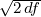

1If the true ages were drawn from a normal distribution with standard deviation ω, then β is the (df + 2)-quantile of a chi-squared distribution with df degrees of freedom that has been shifted by a factor (σ2 + ω2)∕σ2.